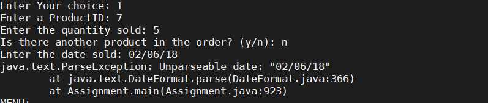

VSRP Intern
Visiting Student Research Programme Intern at King Abdullah University of Science and Technology
I'm a Computer Science and Management student at the University of Warwick,
currently interning at King Abdullah University of Science and Technology.
Name
Abdullah Muhammad-Kamal
Current Location
London, United Kingdom
University
Warwick University
Course of Study
Computer and Management Sciences (BSc Hons)
Year of Study
Placement Year
Email Address
abdulmkamal@hotmail.com
JAVA
Python
HTML5
CSS
PHP
SQL
BULMA Framework
August 2016
UBM | Events Planning Work Experience
October 2018 – April 2019
WARWICK AFRICA SUMMIT | Events Team Executive
November 2018 – December 2019
DEPARTMENT STORE DATABASE MANAGEMENT APPLICATION
This is an application I created during my second year at the University of Warwick. I aimed to extend the services provided by a department store with this. The functionalities include:
The Option Menu

Bad Date Error Handelling
Query example for option 6
 JAVA
SQL
Java JDBC
JAVA
SQL
Java JDBC
January 2019 – March 2019
SMART APPLICANT TRACKING SYSTEM
March 2019 – April 2019
TEACH FIRST | Insight Programme Intern
September 2019 – Present
KING ABDULLAH UNIVERSITY SAUDI ARABIA | VSRP Intern